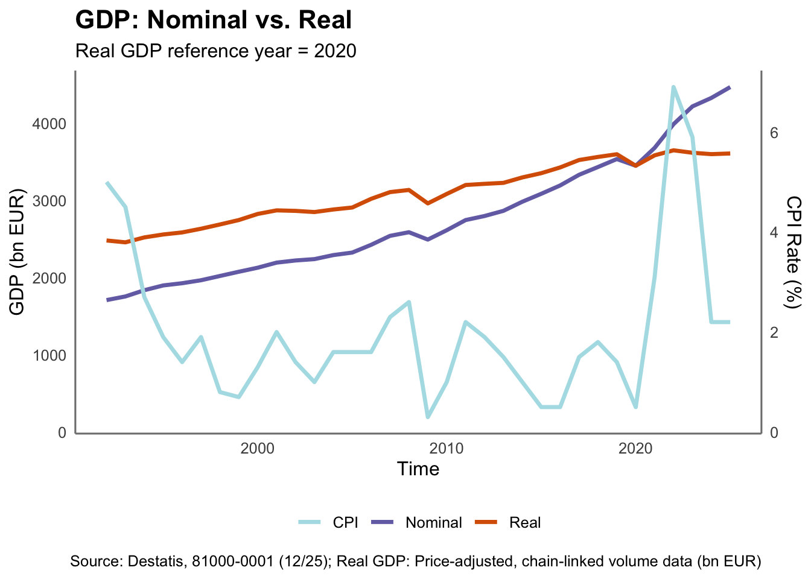
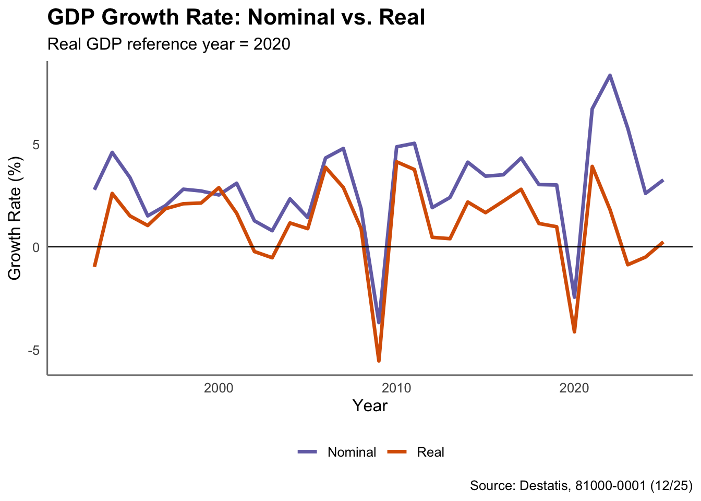
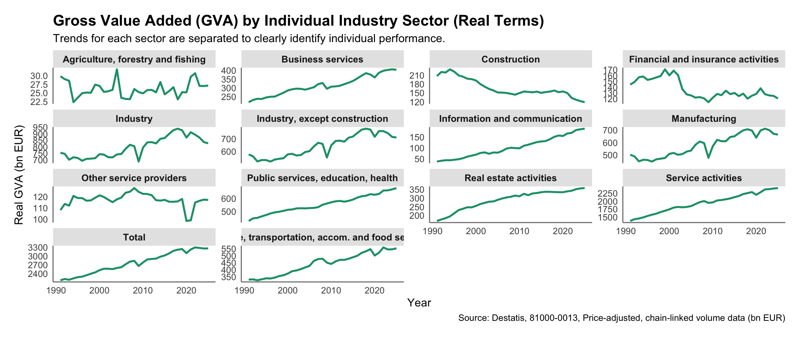
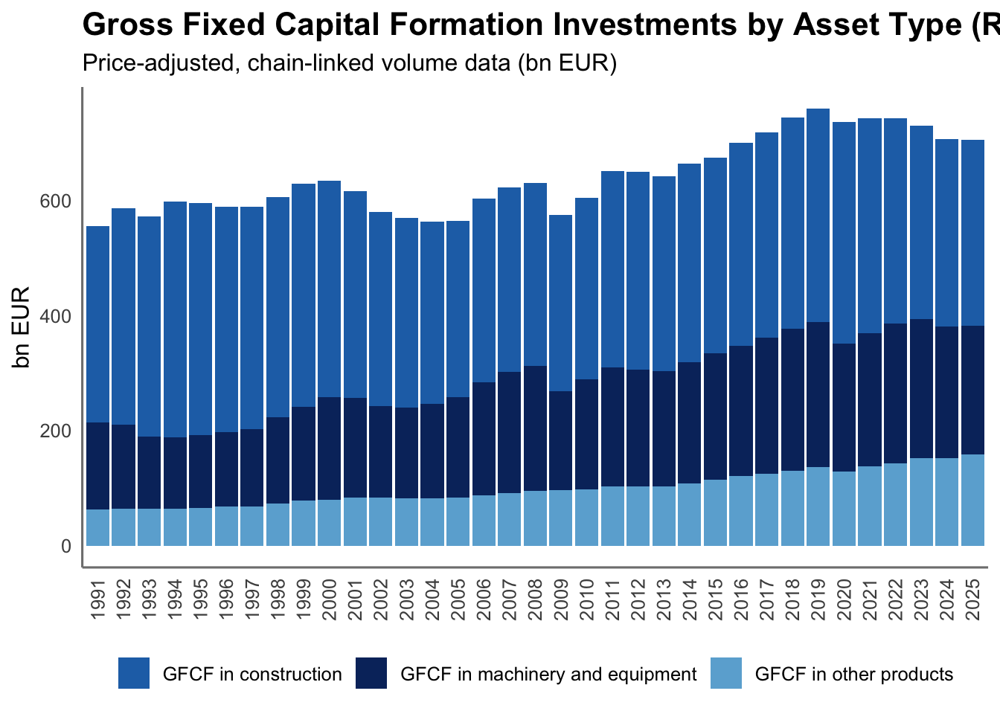
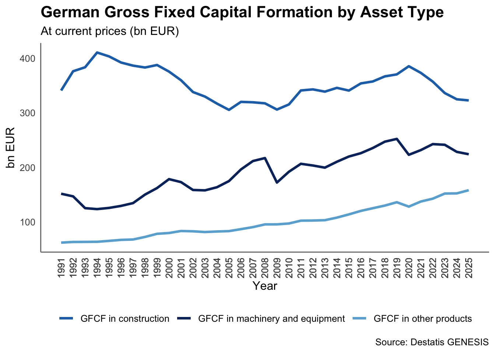
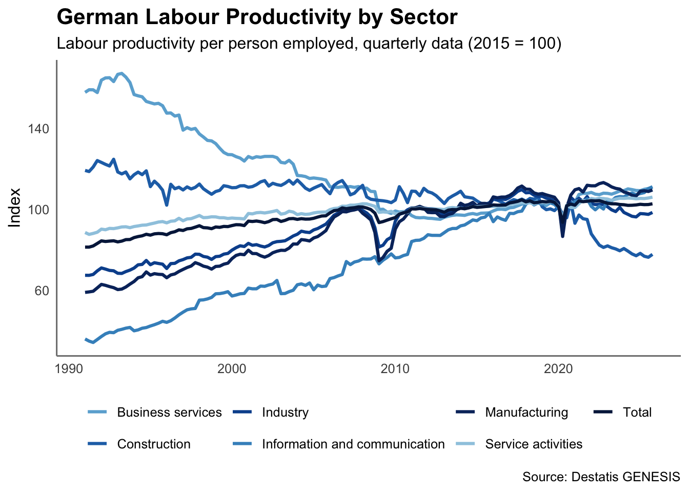

Code
# Pakete laden
library(ggplot2)
library(dplyr)
library(restatis)
library(data.table)
library(magrittr)
library(usethis)
library(patchwork)First, load the necessary packages.
# Pakete laden
library(ggplot2)
library(dplyr)
library(restatis)
library(data.table)
library(magrittr)
library(usethis)
library(patchwork)Best approach is to set up the API connection using gen_auth_save() and then storing the generated key in the .Renviron file. To store the key, one can either set-up the file manually and copy the key or make use of the usethis package. Once the key is stored in the .Renviron file, the database can be accessed in script and Quarto.
# API
#gen_auth_save("genesis", use_token = TRUE)
#usethis::edit_r_environ()It is convenient to set a custom theme beforehand.
colors <- c("Nominal" = "#7570B3", "Real" = "#D95F02", "Accent" = "#1B9E77", "CPI" = "#B0E0E6")
theme_set <- function() {
ggplot2::theme_minimal(base_size = 12) +
ggplot2::theme(
panel.grid.major = element_blank(),
panel.grid.minor = element_blank(),
axis.line = element_line(colour = "grey50"),
plot.title = element_text(face = "bold", size = 16, hjust = 0),
plot.subtitle = element_text(size = 12, hjust = 0),
legend.position = "bottom",
legend.title = element_blank(),
plot.background = element_rect(fill = "white", color = NA)
)
}The data sets are loaded using the gen_table function using the restatis package. The first data set contains GDP data, while the second data set contains consumer price index (CPI) data.
# bip data
bip_raw <- gen_table(
name = "81000-0001",
database = "genesis",
startyear = 1992,
language = "en"
)
# cpi data
cpi_raw <- gen_table(
name = "61111-0001",
database = "genesis",
startyear = 1992,
language = "en"
)As main indicator of the overall economic performance, the first chapter focuses on the analysis and breakdown of the GDP of Germany.
By extracting the specific data from the retrieved dataset, the GDP can be plotted in nominal and real terms with base year 2020. The CPI, described by the right axis, has been added to the graph to provide context on the inflationary environment during the period.
bip_nominal <- bip_raw %>%
copy() %>%
setDT() %>%
.[
value_variable_code == "VGR014" &
value_unit == "unit app." &
`2_variable_attribute_label` == "At current prices (bn EUR)",
.(time = as.integer(time),
nominal = as.numeric(value))
]
bip_real <- bip_raw %>%
copy() %>%
setDT() %>%
.[
value_variable_code == "VGR014" &
value_unit == "unit app." &
`2_variable_attribute_label` == "Price-adjusted, chain-linked volume data (bn EUR)",
.(time = as.integer(time),
real = as.numeric(value))
]
bip_combined <- bip_nominal %>%
copy() %>%
setDT() %>%
merge(bip_real, by = "time", all = TRUE) %>%
.[time >= 1992]
cpi_rate <- cpi_raw %>%
copy() %>%
setDT() %>%
.[
value_unit == "%" &
as.integer(time) >= 1992,
.(time = as.integer(time),
cpi_rate = as.numeric(value))
]
bip_cpi <- bip_combined %>%
copy() %>%
setDT() %>%
merge(cpi_rate, by = "time", all.x = TRUE)
## get max and factor values
gdp_max <- max(bip_cpi$nominal, na.rm = TRUE)
cpi_max <- max(bip_cpi$cpi_rate, na.rm = TRUE)
scale_factor <- gdp_max / cpi_max
ggplot(bip_cpi, aes(x = time)) +
geom_line(aes(y = nominal, color = "Nominal"), linewidth = 1.2) +
geom_line(aes(y = real, color = "Real"), linewidth = 1.2) +
geom_line(aes(y = cpi_rate * scale_factor, color = "CPI"), linewidth = 1.2) +
labs(
title = "GDP: Nominal vs. Real",
subtitle = "Real GDP reference year = 2020",
x = "Time",
y = "GDP (bn EUR)",
caption = "Source: Destatis, 81000-0001 (12/25); Real GDP: Price-adjusted, chain-linked volume data (bn EUR)"
) +
scale_color_manual(values = colors) +
theme_set() +
scale_y_continuous(
name = "GDP (bn EUR)",
sec.axis = sec_axis(transform = ~ . / scale_factor, name = "CPI Rate (%)")
) 
While the nominal GDP shows a steady increase from 2020, the GDP in real terms has been almost constant since 2019. After a drop in 2020, the level has only managed to recover from pre-pandemic levels, but has not shown any significant growth since then.
The retrieved data can also be used to analyze GDP growth rates in nominal and real terms (reference year 2020)
bip_growth <- bip_combined %>%
copy() %>%
.[order(time)] %>%
.[, `:=` (
nominal_growth = (nominal / shift(nominal) - 1) * 100,
real_growth = (real / shift(real) - 1) * 100
)
]
ggplot(bip_growth, aes(x = time)) +
geom_line(aes(y = nominal_growth, color = "Nominal"), linewidth = 1.2) +
geom_line(aes(y = real_growth, color = "Real"), linewidth = 1.2) +
geom_hline(yintercept = 0, linetype = "solid", color = "black", linewidth = 0.4) +
labs(
title = "GDP Growth Rate: Nominal vs. Real",
subtitle = "Real GDP reference year = 2020",
x = "Year",
y = "Growth Rate (%)",
caption = "Source: Destatis, 81000-0001 (12/25)"
) +
scale_color_manual(values = colors) +
theme_set()
What can be noted, next to obviously weak growth rates in real terms, is that the divergence between nominal and real growth rates has diverged significantly since 2021, larger then in previous years.
Next, using the Genesis data, we can analyze the development of the gross value added (GVA) by sector. This provides indications sector-specific performances and helps identifying non-performing sectors.
Note that some sectors overlap in definition. The axis levels are relative to the sector size and do vary by level.
industry_raw <- gen_table("81000-0013", database = "genesis")
industry <- industry_raw %>%
copy() %>%
setDT() %>%
.[value_unit == "unit app." &
`2_variable_attribute_label`== "Price-adjusted, chain-linked volume data (bn EUR)",
.(time = as.integer(time),
gva_real = as.numeric(value),
sector = `3_variable_attribute_label`)
]
ggplot(industry, aes(x = time, y = gva_real)) +
geom_line(color = colors["Accent"], linewidth = 1.0) +
facet_wrap(~ sector, scales = "free_y", strip.position = "top") +
scale_color_discrete() +
labs(
title = "Gross Value Added (GVA) by Individual Industry Sector (Real Terms)",
subtitle = "Trends for each sector are separated to clearly identify individual performance.",
x = "Year",
y = "Real GVA (bn EUR)",
caption = "Source: Destatis, 81000-0013, Price-adjusted, chain-linked volume data (bn EUR)"
) +
theme_set() +
theme(
plot.margin = unit(c(5.5, 10, 5.5, 5.5), "mm"),
strip.background = element_rect(fill = "grey90", color = NA),
strip.text = element_text(face = "bold", size = 10),
legend.position = "none"
)
Manufacturing and industry sectors show zero to negative growth since 2018. Particularly the Industry sector has been on a steep downward trajectory. What is also notable is that the construction sector has been showing a steep decline since the 90s already in GVA. Public services and service activites, howeverm provide a large contribution of the growth factors.
industry_filtered <- industry %>%
copy() %>%
setDT() %>%
.[
time >= 2018 &
!grepl("Total|Gesamt|Summe|wirtschaft gesamt", sector, ignore.case = TRUE)
]
index_base <- industry_filtered[
time == 2018,
.(sector, size_metric = gva_real)
]
industry_indexed_sized <- industry_filtered[
index_base, on = "sector", nomatch = NULL
][,
.(time, sector,
gva_index = (gva_real / size_metric) * 100,
size_metric)
]
ggplot(industry_indexed_sized, aes(x = time, y = gva_index, group = sector, color = sector)) +
geom_line(linewidth = 1.2) +
geom_hline(yintercept = 100, linetype = "dashed", color = "grey30", linewidth = 0.8) +
labs(
title = "Relative Economic Performance by Sector (Indexed: 2010 = 100)",
subtitle = "Compares the growth trajectory of all industry categories since the base year 2010. Color darkness indicates sector size in 2015.",
x = "Year",
y = "Real GVA Index (2015 = 100)",
color = "GVA 2010 (bn EUR)",
caption = "Source: Destatis, National Accounts; Own Calculation"
) +
scale_color_brewer(palette = "Blues", direction = -1) +
# Map continuous size metric (numeric) to a sequential blue gradient
#scale_color_gradient(low = "#C6DBEF", high = "#08519C") +
theme_set()
The GFCF (German: Bruttoanlageinvestition) is an important indicator of the German investment activity. It includes investments in machinery, equipment, buildings, and infrastructure. The development of the GFCF can provide insights into the investment behavior of businesses and the overall economic outlook.
library(patchwork)
gfcf_raw <- gen_table("81000-0023", database = "genesis")gfcf <- gfcf_raw %>%
copy() %>%
setDT() %>%
.[
value_unit == "unit app." &
`2_variable_attribute_label` == "Price-adjusted, chain-linked volume data (bn EUR)",
.(
time = as.integer(time),
value = as.numeric(value),
category = value_variable_label
)
]machinery_dt <- gfcf[
category %in% c(
"GFCF in machinery and equipment",
"GFCF in construction",
"GFCF in other products"
)
]
p1 <- ggplot(
machinery_dt,
aes(
x = factor(time),
y = value,
fill = category
)
) +
scale_fill_manual(
values = c(
"GFCF in machinery and equipment" = "#08306B",
"GFCF in construction" = "#2171B5",
"GFCF in other products" = "#6BAED6"
)
) +
geom_bar(stat = "identity") +
labs(
title = "Gross Fixed Capital Formation Investments by Asset Type (Real Terms)",
subtitle = "Price-adjusted, chain-linked volume data (bn EUR)",
x = NULL,
y = "bn EUR",
fill = NULL
) +
theme_set() +
theme(
legend.position = "bottom",
axis.text.x = element_text(
angle = 90,
vjust = 0.5,
hjust = 1
)
)
p1
ggplot(
machinery_dt,
aes(
x = time,
y = value,
color = category
)
) +
geom_line(
linewidth = 1.2
) +
scale_color_manual(
values = c(
"GFCF in machinery and equipment" = "#08306B",
"GFCF in construction" = "#2171B5",
"GFCF in other products" = "#6BAED6"
)
) +
labs(
title = "German Gross Fixed Capital Formation by Asset Type",
subtitle = "At current prices (bn EUR)",
x = "Year",
y = "bn EUR",
color = NULL,
caption = "Source: Destatis GENESIS"
) +
scale_x_continuous(
breaks = machinery_dt$time
) +
theme_set() +
theme(
axis.text.x = element_text(
angle = 90,
vjust = 0.5,
hjust = 1
)
)
# =========================================================
# LABOUR PRODUCTIVITY
# Destatis table: 81000-0018
# =========================================================
labor_prod_raw <- gen_table(
"81000-0018",
database = "genesis"
)
# inspect available variables
unique(labor_prod_raw$value_variable_label) [1] "Gross wages and sal. per empl. hour (dom. concept)"
[2] "GVA at cur.pr. p.h.wor.by pers.in empl.(dom.conc.)"
[3] "Unit labour costs per hour (domestic concept)"
[4] "Unit labour costs per capita (domestic concept)"
[5] "Lab.prod. per person in empl. (domestic concept)"
[6] "GVA at current prices p.pers. in empl. (dom.conc.)"
[7] "Compens. of empl. per employee (domestic concept)"
[8] "Gross wages and salaries per employee (dom. conc.)"
[9] "Lab.prod. per h.worked by pers.in empl.(dom.conc.)"
[10] "Compens. of empl. per employee hour (dom. concept)"unique(labor_prod_raw$`2_variable_attribute_label`)[1] "Germany"unique(labor_prod_raw$`3_variable_attribute_label`)[1] "X13 JDemetra+ seasonally adjusted" "Unadjusted values" unique(labor_prod_raw$`4_variable_attribute_label`) [1] "Agriculture, forestry and fishing"
[2] "Real estate activities"
[3] "Industry, except construction"
[4] "Public services, education, health"
[5] "Manufacturing"
[6] "Other service providers"
[7] "Financial and insurance activities"
[8] "Business services"
[9] "Construction"
[10] "Information and communication"
[11] "Total"
[12] "Trade, transportation, accom. and food service"
[13] "Industry"
[14] "Service activities" labor_prod <- labor_prod_raw %>%
copy() %>%
setDT() %>%
.[
`3_variable_attribute_label` ==
"X13 JDemetra+ seasonally adjusted" &
`4_variable_attribute_label` %in% c(
"Manufacturing",
"Construction",
"Information and communication",
"Industry",
"Business services",
"Service activities",
"Total"
) &
value_variable_label ==
"Lab.prod. per person in empl. (domestic concept)"&
value_unit == "2020=100"
] %>%
.[
,
.(
year = as.integer(time),
quarter = `1_variable_attribute_label`,
value = as.numeric(value),
category = `4_variable_attribute_label`
)
] %>%
na.omit()labor_prod[
,
date := paste0(
year,
"-",
fifelse(
quarter == "Quarter 1", "01",
fifelse(
quarter == "Quarter 2", "04",
fifelse(
quarter == "Quarter 3", "07",
"10"
)
)
),
"-01"
)
]
labor_prod[
,
date := as.Date(date)
]
# plot
ggplot(
labor_prod,
aes(
x = date,
y = value,
color = category
)
) +
geom_line(
linewidth = 1.1
) +
scale_color_manual(
values = c(
"Manufacturing" = "#08306B",
"Industry" = "#08519C",
"Construction" = "#2171B5",
"Information and communication" = "#4292C6",
"Business services" = "#6BAED6",
"Service activities" = "#9ECAE1",
"Total" = "#041F4A"
)
) +
labs(
title = "German Labour Productivity by Sector",
subtitle = "Labour productivity per person employed, quarterly data (2015 = 100)",
x = NULL,
y = "Index",
color = NULL,
caption = "Source: Destatis GENESIS"
) +
theme_set()